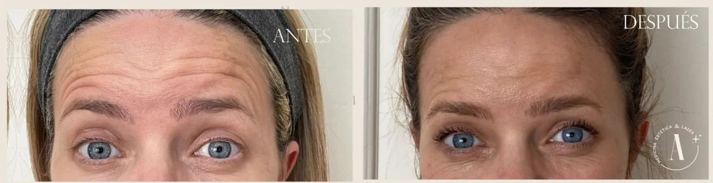

Forehead Wrinkles?
If you are interested in us helping you with this topic:
Book Your Initial Consultation Now!If you are interested in us helping you with this topic:
Book Your Initial Consultation Now!Forehead wrinkles are one of the most common signs of facial aging. They usually appear due to the loss of collagen and elastin in the skin, which causes expression lines to become more visible over time. These wrinkles can also be accentuated by factors such as sun exposure and stress. At our Aesthetic Center, we offer various effective treatments to smooth these wrinkles and regain a younger and more relaxed appearance.
At our Aesthetic Center, we offer a wide range of treatments to reduce forehead wrinkles without surgery. Among the most popular are:
Yes, forehead wrinkles tend to get deeper over time if left untreated. Loss of skin elasticity and constant repetition of facial expressions can make these expression lines permanent. Treatments like Botox or radiofrequency with Accent Prime can prevent the advancement of wrinkles and improve their current appearance.
The results of the treatments vary according to the chosen method and the individual characteristics of each patient. In general, you can expect a noticeable reduction in wrinkle depth and an overall improvement in skin appearance. Treatments like Botox and hyaluronic acid fillers provide immediate results, while Sculptra and Radiesse offer long-term improvements by stimulating collagen production. At our Aesthetic Center, we adapt each treatment to the individual needs of our patients to achieve optimal results.